| 日付 | 2020年11月23日（月） |
|---|---|
| 山域 | 奥多摩 |
| メンバー | 家族（妻、長女・9歳、長男・7歳） |
| 山行形態 | 子連れ日帰り |
| アクセス | 車、バス |
| ルート (Map) | 大沢 (8:39) - (8:53) 川乗橋 - (9:40) 細倉橋 - (10:25) 百尋の滝 - (11:57) 十字路 - (12:02) 川苔山 (12:32) - (12:37) 十字路 - (12:52) 舟井戸 - (13:35) 大ダワ - (13:56) 瘤高山 - (14:16) 本仁田山 - (15:36) 安寺沢 - (16:12) 奥多摩駅 |
大山三峰山、毛無山と続いて、今回も13年振りの川苔山。
いずれも久々に登りたいと思いつつ、コースタイムの長さから敬遠していた山だ。
3連休で高速道路が混むと嫌なので、この機会に近場の奥多摩にある
名峰・川苔山に再訪してみることにする。
町営氷川有料駐車場に車を停める。700円/日だ。
8時オープンのはずだが、8時ちょっと前でも停めさせてくれた。
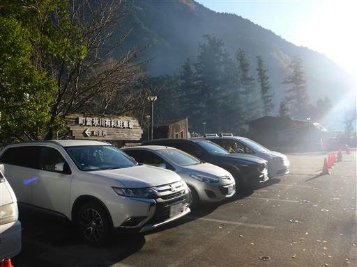
側にトイレがあるので助かる。
あまり混雑しそうにない駐車場で、奥多摩では貴重な存在だ。
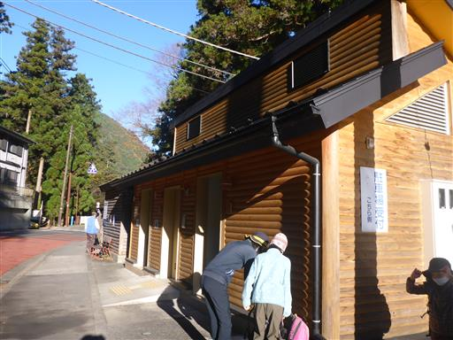
橋を渡って奥多摩駅を目指す。本日は快晴だ。
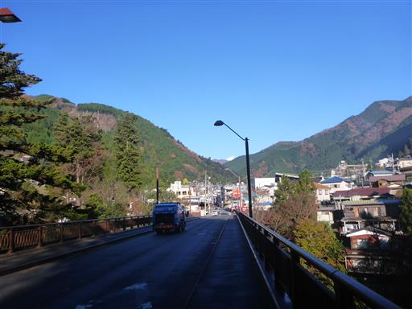
橋の下を覗き込む。寒い中キャンプをしている人がいる。
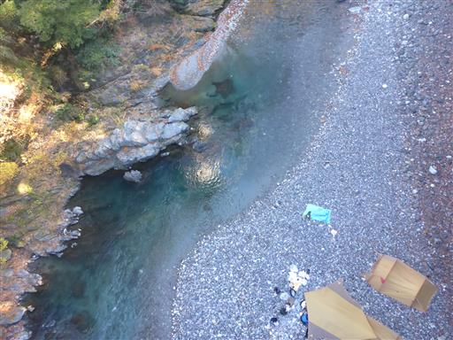
河の縁に立つ旅館。増水したらちょっと怖い。
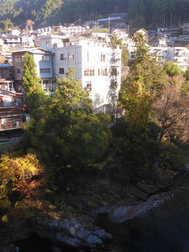
奥多摩駅に到着。ここからバスに乗って川乗橋に移動する。
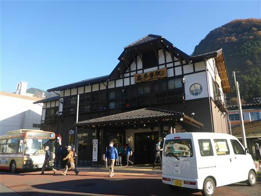
バスは手前の大沢まで。標高390m。
川乗橋バス停はなぜか閉鎖されている。
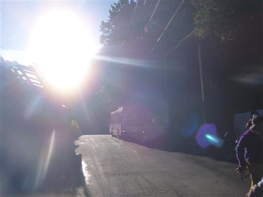
川乗橋まで歩いて移動。周囲の紅葉が美しい。
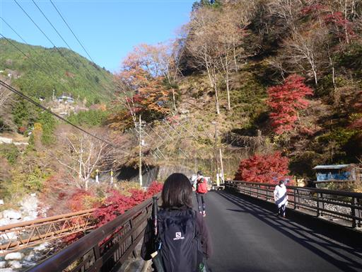
道路崩落現場。細い橋が架かっている。
ここを小型バスしか通れないのが、川乗橋バス停閉鎖の原因なのかも。
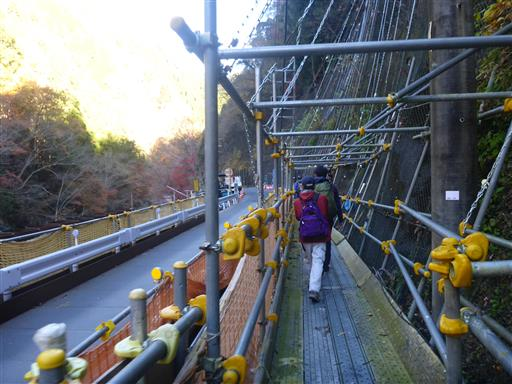
頭上に奥多摩工業曳鉄線が見える。今でも石灰の運搬に使われているらしい。
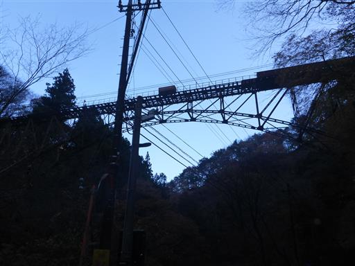
歩くこと15分、川乗橋バス停に到着する。
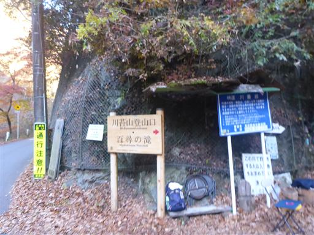
バス停は閉鎖されている。
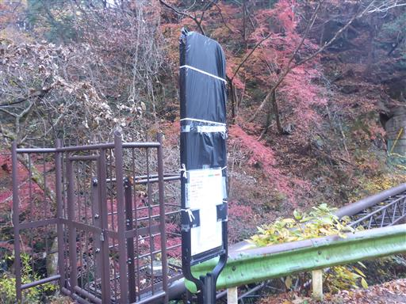
子供は足が短く歩くのが遅いので、ほぼ最後尾からスタート。
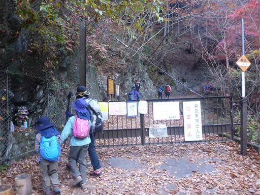
足元の渓谷は美しい。
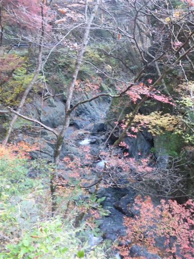
登山口までも長い車道歩きが続く。
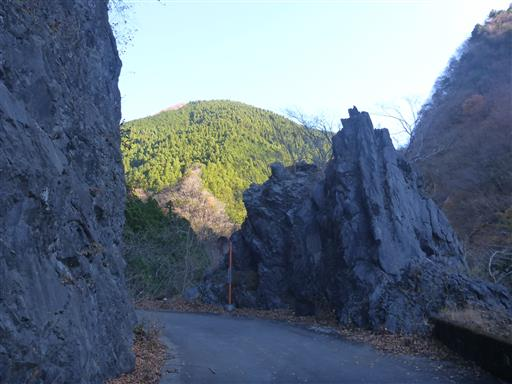
川乗橋から車道を45分歩いて、ようやく登山口に到着する。
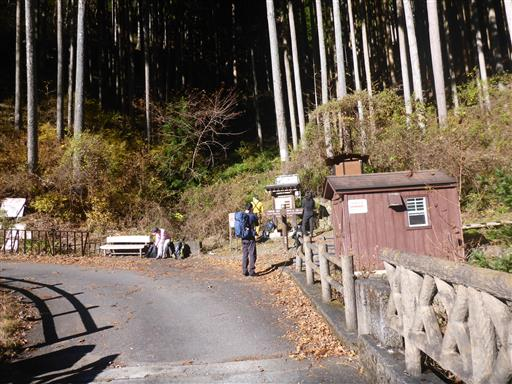
登山開始。やっと土の上を歩ける。
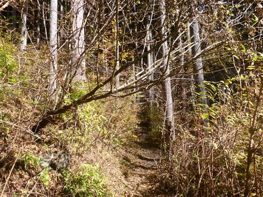
川苔谷に沿った沢沿いの登山道が続く。
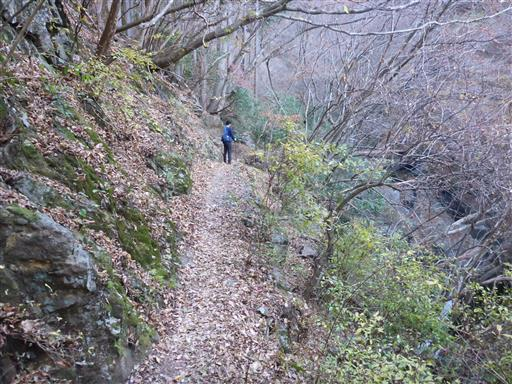
足元に美しい滝が見える。
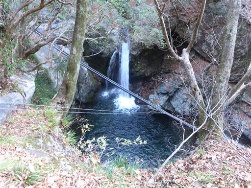
比較的新しそうな木橋。道はよく整備されている。
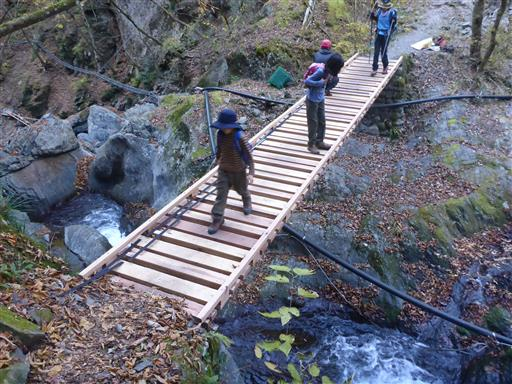
沢沿いの気持ちの良い登山道が続く。
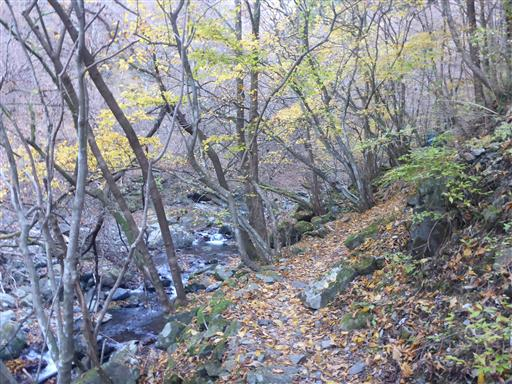
常に片側は急斜面の崖になっているので、あまり気は抜けない登山道だ。
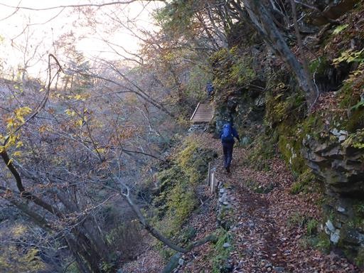
水が交差する滝。珍しい形の滝だ。
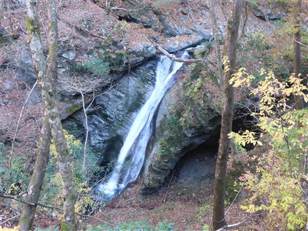
滝を越えると再び沢が近くなる。
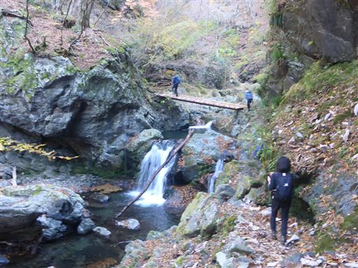
沢沿いの岩場を通過。歩いていて楽しい登山道だ。
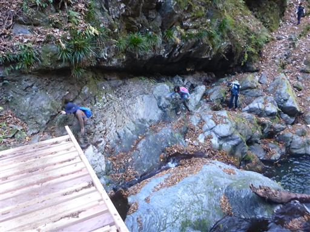
周囲はすっかり秋の景色。

目の前に巨大な岩壁が現れる。
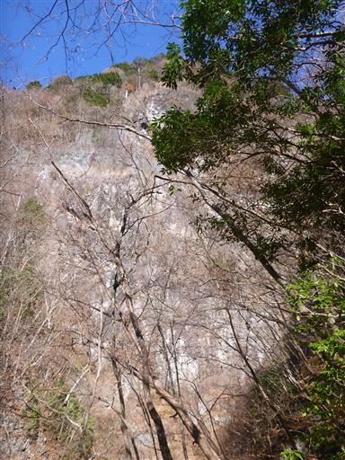
登山道の左側は切れ落ちている。

百尋の滝に到着。落差40mの美しい滝だ。
ここでおやつ休憩をとる。
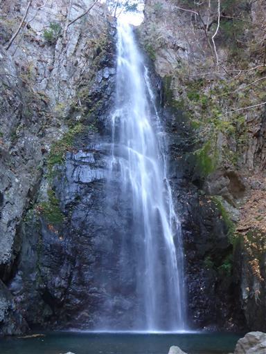
滝壺の近くまで近づくことができる。
落ち葉が多く浮かんでいるので、どこまでが地面か分かりにくい。
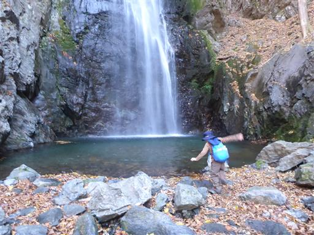
百尋の滝を見学したら川苔山に向けて出発。
この辺りも片側は急斜面で、滑落しないように鎖が設置されている。
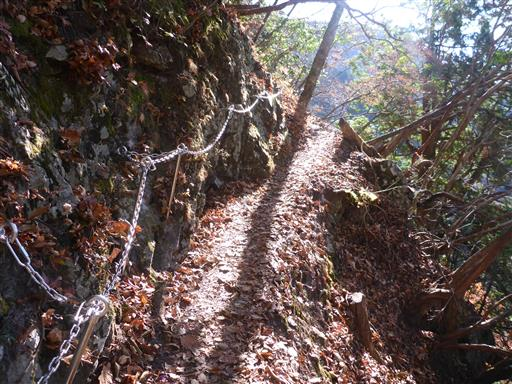
登山道は檜の植林地帯に入る。
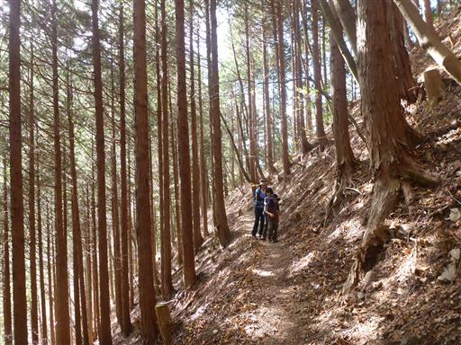
足毛岩方面は通行止になっている。
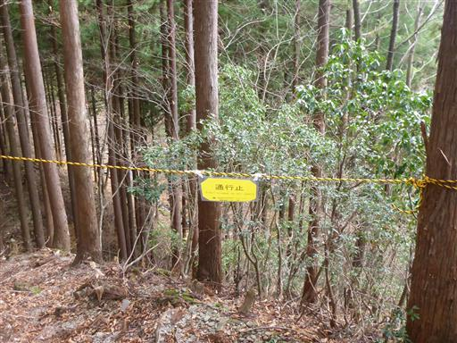
沢の詰めの部分。もう水はほとんど流れていない。
空がどんよりとしてきて、周囲は寂しい景色になる。
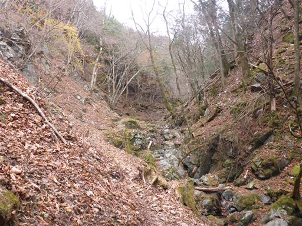
尾根に到達。川苔山はもうすぐそこだ。
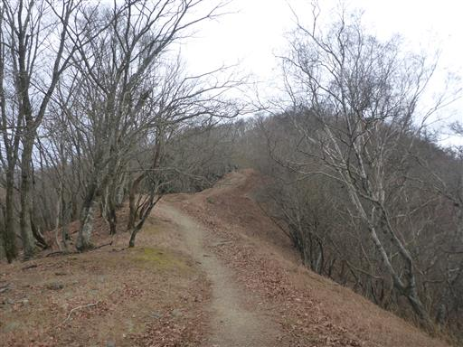
川苔山に到着。標高1063m。
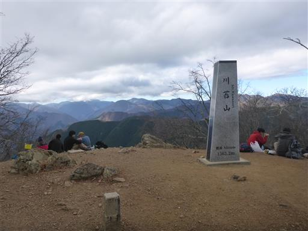
雲は多いが幸い山頂部は雲に覆われていないため、展望が広がる。
奥に見えるのが雲取山で、左に長い石尾根が伸びている。
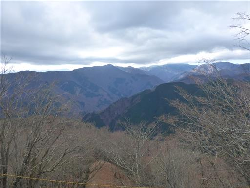
人気の山だけあって続々と登山者が集まってくる。
今日は行程が長いので、30分ほどの休憩で出発する。
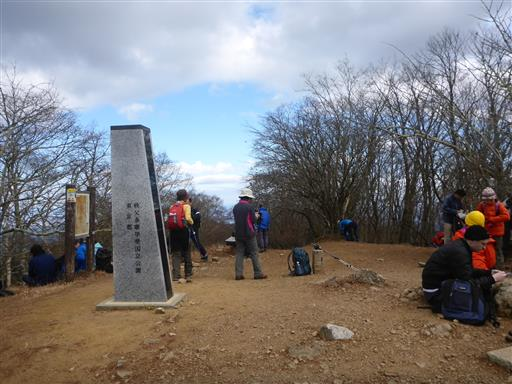
登山道の交差点。登ってきた道と分かれて鳩ノ巣駅方面に向かう。
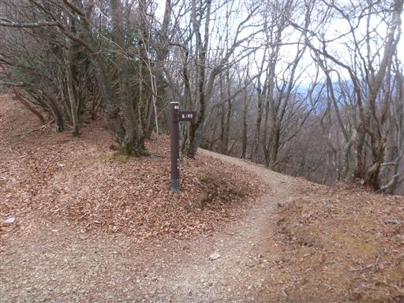
広々とした道で歩きやすい。
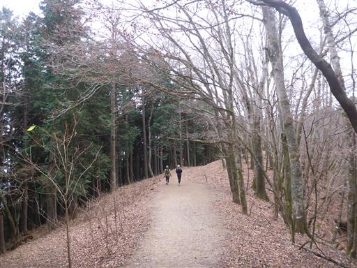
川苔山からの下山ルートは鳩ノ巣駅に向かうのが一般的なのだが、
車を停めた奥多摩駅に向かいたいため、分岐点で本仁田山方面に向かう。
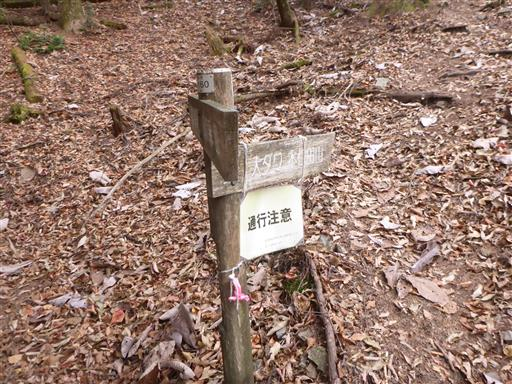
いきなりの登り。
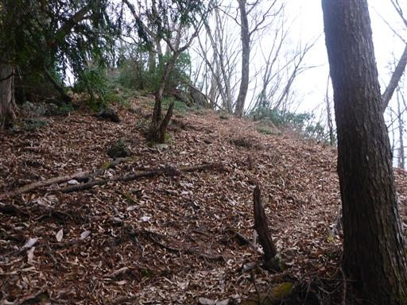
その後は下り。何度かアップダウンを繰り返す。
鳩ノ巣駅に向かう道と比較するとかなり細い道だ。
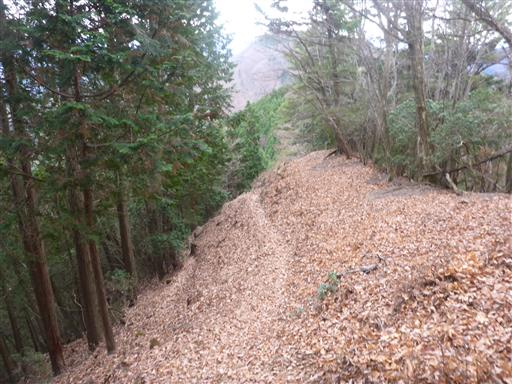
痩せ尾根、岩がちで案外歩きにくい。
楽しい登山道とも言える。
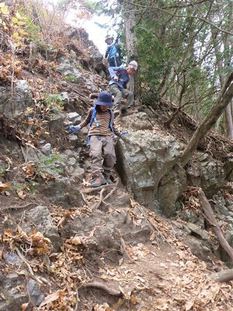
落ち葉積もる岩尾根。
尾根上を忠実にたどる踏み跡と巻道が錯綜していて歩きにくい。
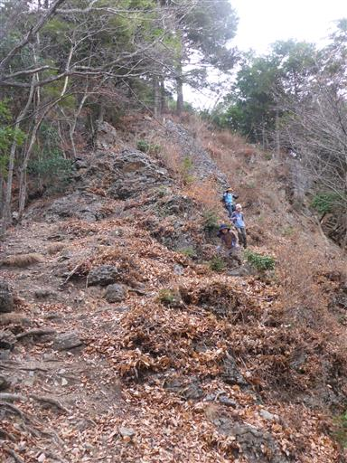
岩の間を太い木の根が伸びている。
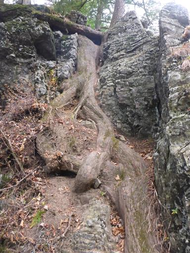
真っ逆さまに落っこちる、とんでもない急斜面登山道。
しかも落ち葉がよく滑る。
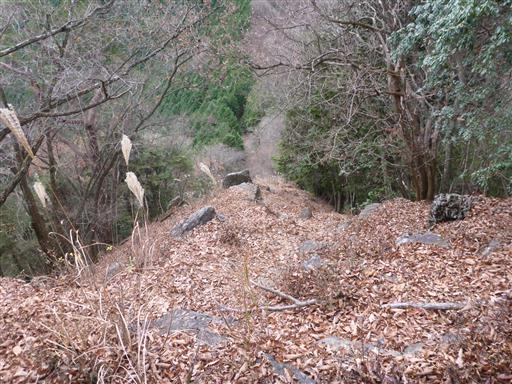
靴のソールが落ちている。こんな場所でソールがはがれると悲惨だ。
登山道に放置されているが、履いていた人はソールがはがれたことに気付かなかったのだろうか？
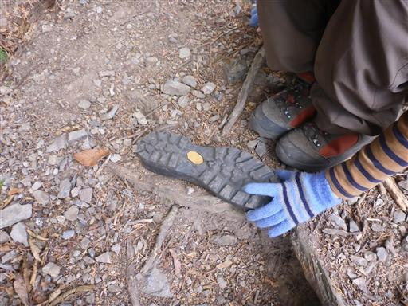
大ダワに到着。歩いてきた方向は鋸尾根という名で悪路のようだ。
事前の情報なく歩いてきたが、確かに鋸と言えるようなアップダウンがあった。
悪路と言うより難路と言う方が正確かも。
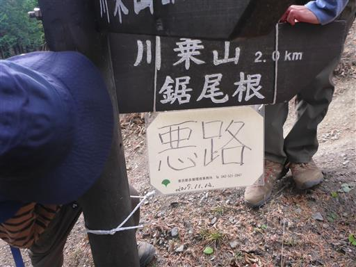
ここには祠がある。特に峠道など無さそうな場所だが、
どのような人々がこの道を利用してきたのだろうか？
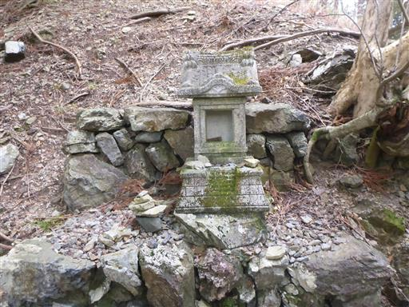
ここから本仁田山まで200mも登りがある。
奥多摩駅に行くにはこの山を越える必要がある。
登山道から振り返ると先ほど登った川苔山が見える。
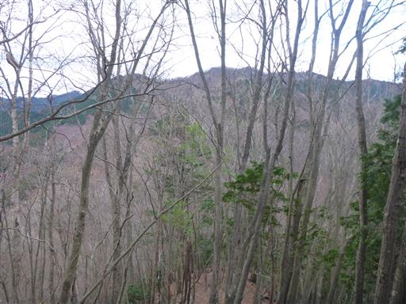
瘤高山に到着。ここまでで登りの半分だ。
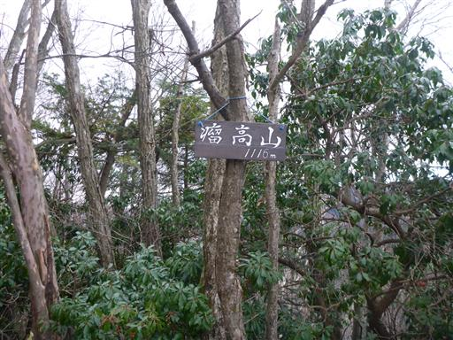
ゆるやかな尾根道の後、本仁田山の最後の登りに差し掛かる。
本仁田山に到着。標高1225m。
とっても地味な山頂だ。時間が遅いので誰もいない。
山頂から少し進んだところから展望が広がる。薄明光線が美しい。
遠くに見えるのはスカイツリー。
こちらは筑波山。雲は多いが空気は澄んでいる。
あとは、ひたすら急斜面の道を下って行く。
あまり面白味のない登山道だ。疲れたので無心で下って行く。
ようやく下山。本仁田山からの下山は思ったより時間がかかった。
ここから奥多摩駅まで2.3kmの車道歩きだ。

普段はあまり好きでない車道歩きだが、
本仁田山からの急斜面道よりははるかに歩きやすいため助かる。
美しい紅葉。
橋から望む奥多摩工業氷川工場。
斜面に張り付くように聳える工場は存在感抜群だ。
奥多摩駅に到着する。標高340m。もう日が暮れかかっている。
8時半から歩き始めて7時間かかり、疲れた一日だった。
川苔山だけでもそれなりに長いが、その後の本仁田山越えがきつかった。
子供達は山中、文句だらけだったが、下山後にご褒美をあげるとケロっと疲れを忘れてしまったようだ。
久々の川苔山は、なぜか当時の記憶がほとんど残っていなかったが、
今回は沢沿いの登山道と鋸尾根が印象に残る山行だった。